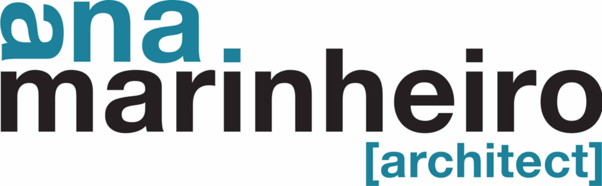
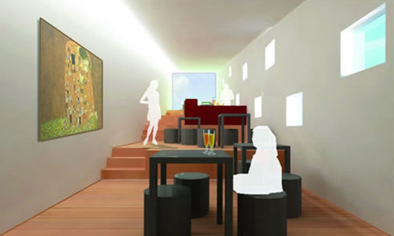

|  architecture study projects bi-housing coffee & books city hall planetarium oporto mindelo work experience parasite erik plan 08 coffee & books oberbilker markt physio weisser riese wilhelmschule latina hybrid square exhibition design photography about contact almarinheiro@gmail.com | +49(0)176 96 479 441 |
|---|
| coffee & books |
|  |
| Everyday tourists and students walk around Coimbra's, Portugal, old medieval part, visiting or studying in the city´s historical university. The assignment was to develop a Coffee and Bookshop that should work as a info point, rest and conviviality area. The chosen site was a small garden delimitated by a narrow road, almost three meters above the terrain level, and by few houses. The proposal strategy was to design an architectural sculpture, an attractive piece that invites the visitants to enter in the site and the building. At the same time it separates the private houses entrances from the public building area. This new landmark follows the ascendant terrain movement, arising from the small site and finishing above the rooftop of the surround houses, pointing through the landscape of the medieval city. |